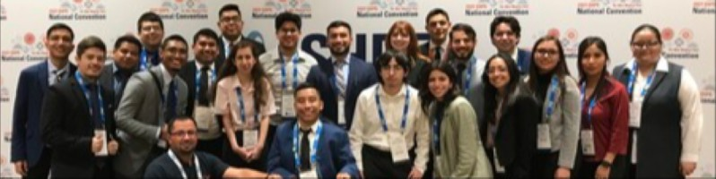
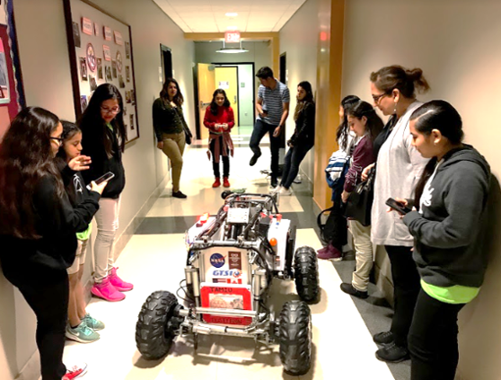
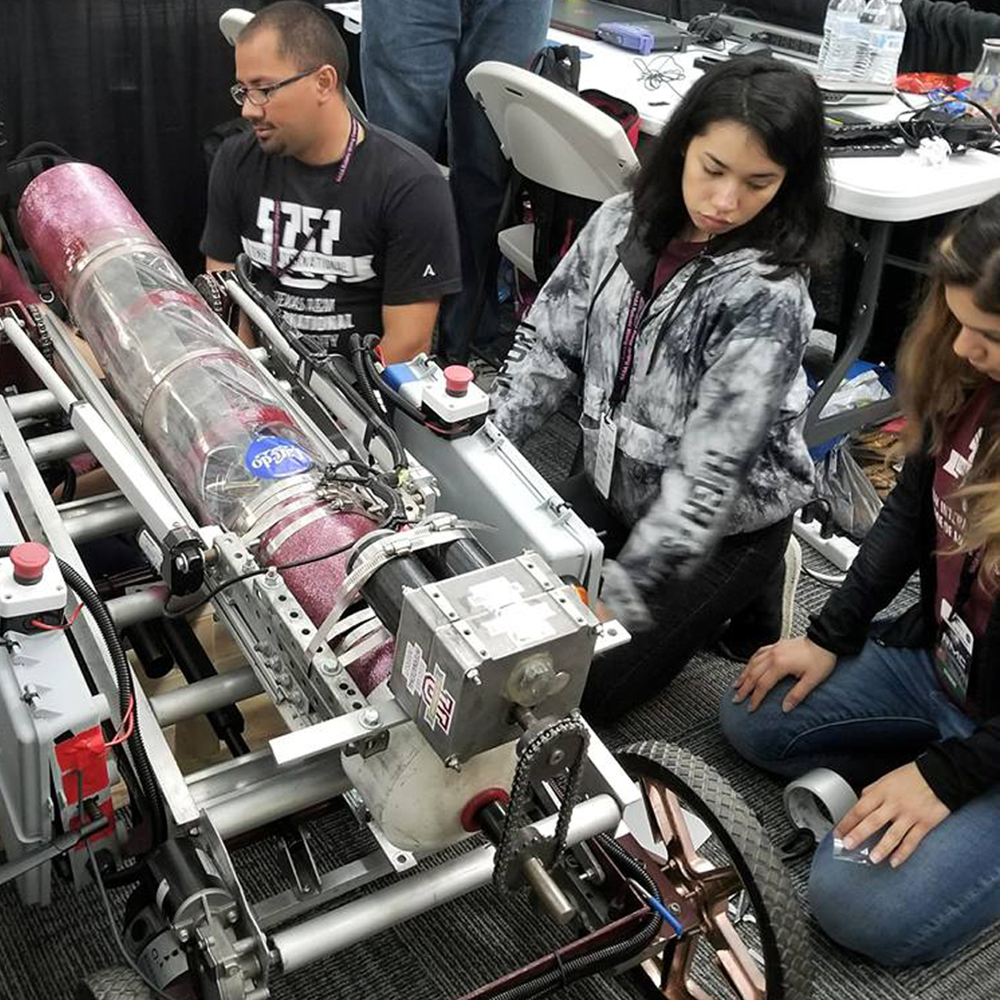
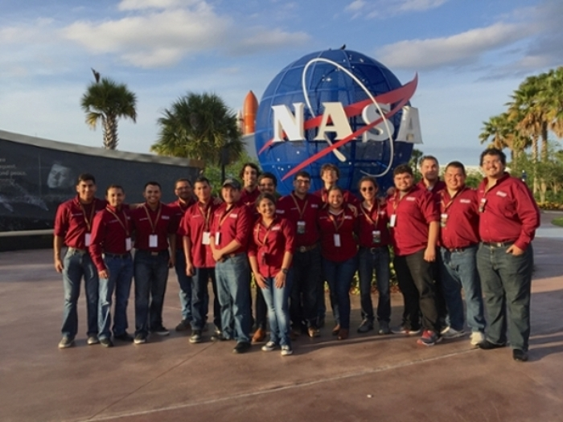
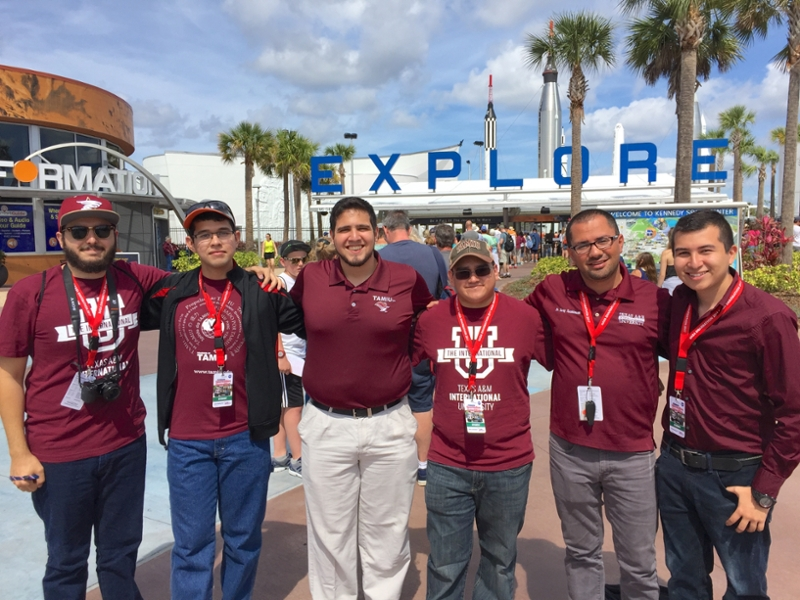

Founder of STARR Lab
Established the Space, Transportation, Automation, and Robotics Research Lab to support interdisciplinary research, student innovation, funded projects, and competition-based learning.
Engineering educator • Research mentor • Robotics & systems innovator
Dr. Tariq H. Tashtoush is a tenured Associate Professor of Engineering at Texas A&M International University and Founder/Director of the STARR Lab — Space, Transportation, Automation, and Robotics Research. This portfolio highlights his recent grants, awards, COAS space and aviation leadership, student mentorship, public news, and engineering impact.
About
Dr. Tashtoush’s career reflects a commitment to engineering innovation, interdisciplinary collaboration, student mentorship, and regional workforce development. His academic background in Industrial and Systems Engineering supports a broad research portfolio that spans robotics, autonomous systems, human-machine systems, advanced manufacturing, smart cities, and space systems.
Through the STARR Lab, he has created a student-centered research environment where undergraduate and graduate students engage in sponsored research, national and international competitions, design projects, outreach, and applied engineering problem solving.
Selected achievements
Established the Space, Transportation, Automation, and Robotics Research Lab to support interdisciplinary research, student innovation, funded projects, and competition-based learning.
Mentored the DustySCAR autonomous vehicle team, which qualified among elite international teams and placed 5th at the ACC 2026 Self-Driving Vehicle International Competition.
Led and contributed to projects supported by agencies and partners including the U.S. Department of Education, NASA-related competitions, and Department of Defense research initiatives.
Mentors students through research, senior design, robotics teams, student organizations, internships, publications, presentations, and professional development pathways.
Developed outreach and retention activities that support Hispanic, first-generation, female, and economically disadvantaged students pursuing STEM and engineering degrees.
Advises student organizations including SHPE, SWE, and SEDS, supports local robotics competitions, and builds connections among schools, industry, and the university.
Recent grants, awards & COAS leadership
Organized from newest to oldest, this section highlights newer public milestones: federal STEM and research funding, the 2026 TARC collaboration award, student awards, and Dr. Tashtoush’s leadership in TAMIU College of Arts and Sciences space and aviation initiatives.
Principal Investigator for the $5,000 TARC 2026 collaboration award, Prime: Soaring Through Space , with collaborators Rebecca Crow, Xin Wang, Arturo Rodriguez, and Orion Ciftja across the Texas A&M System.
The project proposes Roberto , an autonomous builder-bot for simultaneous lunar regolith additive manufacturing and materials testing to support future lunar infrastructure and in-situ materials knowledge.
View TARC 2026 collaboration awardMentored the STARR Lab DustySCAR team through qualification and competition at ACC 2026, where the team placed fifth internationally after intensive testing, debugging, and optimization.
View public LinkedIn postRecognized in TAMIU’s COAS Space & Aviation special project page for research on multi-search algorithms to control swarms of autonomous robots in space and for leadership of the DustyTRON Robotics group.
The public COAS page connects this work to student teams competing in the TAMIU Drone Competition, NASA Robotic Mining Competition, and NASA Swarmathon.
View COAS Space & Aviation pageFaculty mentor for two winning Spring 2025 Engineering Design Conference projects: second place for an AI tutoring platform and third place for an AirTag detection project using a 3-axis gimbaled robot.
Read TAMIU storyListed as president-elect and immediate past president for TAMIU Chapter 296 of The Honor Society of Phi Kappa Phi, reflecting continuing service to academic excellence and student recognition.
Read TAMIU storyParticipated with TAMIU leaders and regional partners in discussions with the Texas Space Commission on Laredo’s role in space-sector education, workforce development, logistics, and STEM outreach.
Read TAMIU storyPrincipal investigator/project leader for TAMIU’s Minority Engineering and Science Improvement Program STEM-Squared (MSEIP-STEM2), an institutional grant supporting engineering recruitment, retention, outreach, tutoring, professional development, certificates, and work-based learning.
The project focuses on strengthening STEM pathways for TAMIU’s Hispanic-serving, low-income, and underrepresented student population, with an emphasis on increasing engineering enrollment, retention, graduation, and female participation.
View U.S. Department of Education MSEIP past awardsCo-principal investigator on a DOD HBCU/MI-supported award to acquire a Self-Driving Car Studio Bundle for autonomous vehicle research, teaching, resilience, fault tolerance, and outreach to underrepresented students.
Read TAMIU announcementTAMIU public highlights
Organized from ongoing/recent to earlier milestones, these Texas A&M International University pages and news releases document a consistent record of student-centered leadership, robotics engagement, STEM outreach, grant-supported workforce development, and academic service.
Served as faculty advisor and long-term mentor to TAMIU SHPE students, supporting convention participation, competitions, leadership development, employer networking, and student career pathways.
TAMIU sourceMentored undergraduate research presentations in systems engineering, mechatronics, automation, lean systems, Industry 4.0, and machine learning applications.
TAMIU sourceServed in leadership for TAMIU Chapter 296 of The Honor Society of Phi Kappa Phi, including Chapter President and later President-Elect/Immediate Past President, supporting academic excellence and student recognition.
TAMIU sourceDirected and supported the federally funded MSEIP-STEM2 initiative, a $892K U.S. Department of Education award focused on engineering recruitment, retention, outreach, tutoring, mentoring, professional development, certificates, and STEM pathways for underrepresented students.
TAMIU sourceLed student robotics teams connected to NASA-style competitions, including the NASA Robotic Mining Competition, Swarmathon, and Lunabotics-related work that developed hands-on engineering, teamwork, and communication skills.
TAMIU sourceWorked with TAMIU engineering students to design and create protective masks, shields, and aerosol boxes for frontline personnel in Laredo during the COVID-19 response.
TAMIU sourceServed as project coordinator for Engineering Undergraduate Research Abroad, leading TAMIU Systems Engineering students in collaborative robotics and automation research with the National University of Quilmes in Argentina.
TAMIU sourceSupported free engineering exploration workshops for middle school, high school, and university STEM students, introducing participants to college life, engineering careers, research topics, robotics, programming, and 3D printing.
TAMIU sourceHelped coordinate and mentor robotics engagement for Laredo-area school districts through FTC events at TAMIU, bringing together hundreds of middle and high school students, mentors, coaches, and volunteers.
TAMIU sourceReceived SHPE Region 5 Jaime Escalante recognition as an outstanding educator and advisor, and was later selected as SHPE advisor-at-large and National Convention Advisors Conference vice-chair.
TAMIU sourceLinkedIn public updates
This section highlights public LinkedIn updates that reflect Dr. Tashtoush’s ongoing work in student success, aerospace engagement, autonomous systems, and human-centered robotics.

Associate Professor at Texas A&M International University • Founding Director of STARR Lab
View LinkedIn ProfileShared the STARR Lab – DustySCAR team’s participation in the 2026 Autonomous Driving Competition sponsored by Quanser at the American Control Conference, including their 5th-place international finish after days of testing, debugging, and real-time optimization.
Read public postHighlighted pride in TAMIU students completing their degrees, including students who returned after years away, and celebrated graduates beginning the next chapters of their careers.
Read public postShared reflections from a TAMIU visit to Firefly Aerospace in Austin, emphasizing how industry experiences connect classroom learning with real-world space innovation and inspire students to pursue aerospace careers.
Read public postAnnounced two new robotic platforms: BenBen, a quadruped robot for mobility support, monitoring, indoor navigation, and assistive logistics; and Atlas, a humanoid research platform for human-robot interaction, manipulation, and service-based assistance.
Read public postResearch portfolio
Autonomous vehicles, mobile robotics, quadruped and humanoid platforms, UAV/UGV cooperation, navigation, perception, control, and multi-robot coordination.
Student-led NASA-style robotics, lunar regolith construction concepts, in-situ resource utilization, rover systems, and space workforce preparation.
Autonomous driving testbeds, vehicle-to-vehicle experimentation, reprogrammable traffic systems, simulation environments, and urban monitoring technologies.
Human-robot collaboration, human factors, ergonomics, service robotics, assistive technologies, healthcare-oriented robotics, and interaction design.
Smart manufacturing, additive manufacturing, Industry 4.0, digital twins, 3D printing, automation, quality, logistics, and production systems.
Project-based learning, systems thinking, research-integrated teaching, experiential learning, student competitions, retention, and STEM pathways.
STARR Lab ecosystem
The STARR Lab serves as a platform for research, teaching, outreach, and student leadership. Teams work on space robotics, autonomous vehicles, smart manufacturing, UAV/UGV systems, humanoid and quadruped robotics, and applied AI.
STARR Lab
STARR Lab is Dr. Tashtoush’s student-centered research ecosystem for robotics, autonomous systems, space systems, transportation technologies, smart manufacturing, human-machine systems, and STEM workforce development. The lab connects research, teaching, outreach, industry engagement, and student competitions into one applied engineering platform.
STARR Lab creates opportunities for students to move from classroom concepts to real engineering practice. Students participate in funded research, senior design, robotics competitions, technical demonstrations, conference presentations, industry visits, outreach events, and interdisciplinary problem solving.
The lab’s work is grounded in systems thinking: students learn to connect technical design with performance, safety, reliability, human factors, manufacturability, operations, and community impact.
STARR Lab is built around mentorship, accessibility, high expectations, and student ownership. Students are encouraged to ask questions, test ideas, fail safely, improve designs, and communicate their work professionally.
Research includes lunar regolith construction concepts, autonomous builder-bots, robotic mining, rover systems, swarm algorithms, NASA-style competitions, and student preparation for the growing space economy.
Work includes self-driving vehicle testbeds, smart-city traffic systems, vehicle-to-vehicle experimentation, autonomous driving algorithms, resilience, fault tolerance, and safety-aware mobility systems.
The lab studies mobile robots, humanoid and quadruped platforms, UAV/UGV coordination, perception, navigation, controls, sensing, manipulation, and multi-robot operations.
Projects connect additive manufacturing, 3D printing, digital twins, computer integrated manufacturing, automation, quality control, production planning, facility design, and logistics.
Research emphasizes human-robot interaction, ergonomics, assistive robotics, healthcare-oriented service robotics, mobility support, indoor navigation, manipulation, and human-centered design.
The lab integrates research into teaching through senior design, undergraduate research, outreach workshops, competitions, certificates, mentoring, and work-based learning pathways.
TARC-funded collaboration advancing Roberto, an autonomous builder-bot concept for lunar regolith additive manufacturing and in-situ materials testing.
Student autonomous vehicle research team that placed 5th internationally at the ACC 2026 Self-Driving Vehicle International Competition after testing, debugging, and optimization.
Work connected to multi-search algorithms for swarms of autonomous robots in space and leadership of DustyTRON robotics activities.
DOD HBCU/MI-supported autonomous vehicle research and teaching platform for resilience, fault tolerance, smart-city experimentation, and underrepresented student engagement.
U.S. Department of Education project supporting engineering recruitment, retention, outreach, tutoring, certificates, professional development, work-based learning, and STEM pathways.
Quadruped and humanoid platforms used for service robotics, assistive logistics, mobility support, monitoring, human-robot interaction, manipulation, and indoor navigation research.
Self-driving vehicle research and competition team focused on autonomy, controls, testing, optimization, and competition-based learning.
Robotics team connected to NASA-style robotic mining, space systems, hardware integration, and student-led design for challenging environments.
Multi-robot coordination, search algorithms, distributed autonomy, and swarm behavior for space-relevant robotic applications.
UAV/UGV research, aerial-ground coordination, sensing, mobility, and field robotics for inspection, monitoring, and applied autonomy.
Hands-on engineering design, mechanical systems, fabrication, testing, systems integration, and student leadership.
Quadruped and humanoid platforms for human-centered robotics, mobility support, HRI, manipulation, monitoring, and indoor navigation.
Autonomous vehicle testbed with small-scale cars, traffic elements, maps, monitors, and reconfigurable experimentation for teaching and research.
Humanoid, quadruped, mobile, aerial, ground, and competition robots used for research, demonstrations, senior design, and outreach.
3D printing and prototyping resources that support design-build-test cycles, STEM camps, senior design, and research demonstrations.
Modeling, simulation, optimization, CAD, computational tools, and systems engineering methods used to connect research with coursework.
Students can begin with small tasks such as literature reviews, CAD models, coding assignments, testing, fabrication, or outreach support. As they gain confidence, they can move into project leadership, conference presentations, publications, competitions, and senior design leadership.
Contact STARR LabSTARR Lab supports middle school, high school, and undergraduate outreach through robotics demonstrations, engineering workshops, summer activities, and campus events.
The lab’s mentoring culture connects with student organizations such as SHPE, SWE, SEDS, and engineering student teams.
Students connect classroom learning with professional pathways through industry visits, applied projects, seminars, competitions, and workforce-oriented research.
Lab activities emphasize serving South Texas, strengthening STEM pathways, and helping students see themselves as engineers, researchers, and leaders.




Teaching
Dr. Tashtoush integrates active learning, modeling and simulation, competitions, mentorship, and applied projects to help students connect technical concepts with real engineering practice. His teaching emphasizes accessibility, high expectations, professional mentoring, and confidence-building.
Leadership & involvement
Faculty advisor and mentor for SHPE, SWE, SEDS, and student research teams.
Supports local school robotics teams, FTC competitions, STEM camps, and K–12 engagement.
Creates opportunities through tours, seminars, applied projects, and workforce-aligned partnerships.
Supports engineering curriculum innovation, systems engineering pathways, and interdisciplinary learning.
Recognition
Contact
For collaboration, student mentoring, speaking, outreach, or research opportunities, connect with Dr. Tashtoush through Texas A&M International University or professional channels.